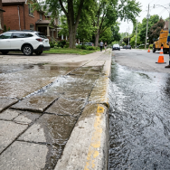
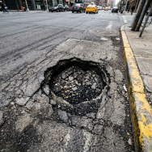
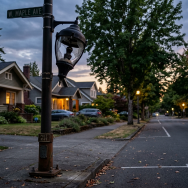
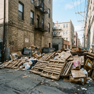

Recent Community Reports
Verified reports lodged in Jakarta and surrounding regions
View live feed
→
→

In review
CMP-2026-8841
PAM clean drinking water pipeline burst flooding sidewalk in front of Cipete Raya MRT
Jl. Fatmawati Raya No. 42 (depan Stasiun MRT Cipete Raya)

Assigned
CMP-2026-8819
Severe 15cm asphalt cavity in TransJakarta corridor causing motorbike rim damage
Jl. Gatot Subroto Kav. 38 (depan Menara Mulia, Jalur Trans Jakarta)

Resolved
CMP-2026-8794
Complete PJU streetlight outage spanning 300 meters along residential corridor
Jl. Tebet Barat Dalam Raya No. 24, RT 08 / RW 03

In review
CMP-2026-8720
Illegal household trash accumulation obstructing drainage at Kali Krukut Kemang
Kampung Kemang, RT 02 / RW 01 (bantaran Kali Krukut)